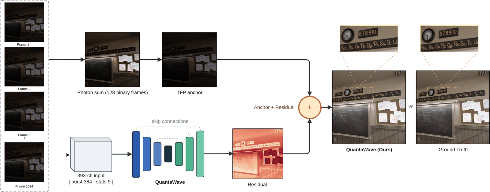
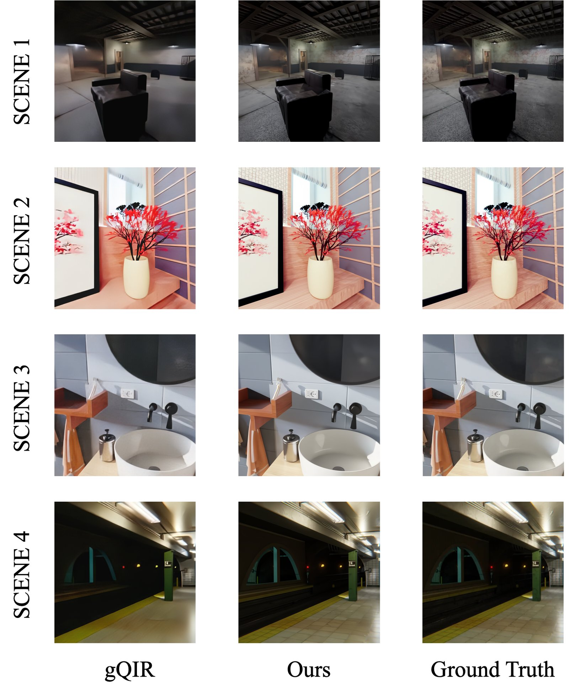

WACV 2027
Indian Institute of Technology Gandhinagar, India
* Equal contribution
Single-photon avalanche diode (SPAD) cameras record a scene as a burst of sparse binary frames rather than as a single exposure, so reconstruction differs from conventional image denoising. For a static scene, the temporal mean of the burst is a sufficient statistic, and the burst can be collapsed without loss. Dynamic captures break this assumption: the Single-Photon Challenge evaluates the scene at the final frame of the burst, so averaging discards when each detection occurred. We therefore ask how much temporal resolution a reconstruction network should receive. We introduce QuantaWave, a hierarchical encoder–decoder that retains the final 128 binary RGB frames as separate input channels and predicts an RGB correction over their photon mean. Against a model matched for capacity and training budget that receives the same frames averaged, it gains 9.653 dB. Because the two inputs are equivalent under a stationary Bernoulli model, this gap measures the end-to-end cost of collapsing temporal resolution for a moving target rather than the information advantage of individual samples. No single architectural component we ablate accounts for more than 0.6 dB, and Haar wavelet resampling leaves accuracy unchanged while removing a tenth of the parameters. QuantaWave reaches 34.43 dB mean PSNR and ranks first by every PSNR statistic on the public benchmark, although it does not lead on LPIPS or mean MS-SSIM, and its margin narrows under sensor mismatch and severe photon starvation.

Scores from the official evaluation server.
| Method | PSNR ↑ | MS-SSIM ↑ | LPIPS ↓ | ||||||
|---|---|---|---|---|---|---|---|---|---|
| mean | 5%-low | 1%-low | mean | 5%-low | 1%-low | mean | 5%-low | 1%-low | |
| QuantaWave (ours) | 34.434 | 26.525 | 23.910 | 0.971 | 0.933 | 0.911 | 0.096 | 0.230 | 0.275 |
| Anonymous entry A | 33.451 | 25.058 | 21.643 | 0.972 | 0.938 | 0.901 | 0.062 | 0.139 | 0.211 |
| Anonymous entry B | 33.059 | 25.877 | 22.348 | 0.966 | 0.927 | 0.906 | 0.108 | 0.232 | 0.285 |
| Restormer | 30.161 | 21.981 | 20.681 | 0.932 | 0.830 | 0.798 | 0.191 | 0.353 | 0.420 |
| DiffBIR refinement | 29.776 | 22.118 | 20.354 | 0.936 | 0.837 | 0.776 | 0.149 | 0.354 | 0.535 |
| bit2bit + refinement | 29.128 | 23.291 | 21.691 | 0.937 | 0.870 | 0.839 | 0.200 | 0.339 | 0.378 |
| gQIR | 19.529 | 14.157 | 12.834 | 0.863 | 0.724 | 0.679 | 0.237 | 0.370 | 0.404 |

@inproceedings{dutta2027quantawave,
title = {QuantaWave: Learning to See from Binary Photons},
author = {Dutta, Sayak and Badola, Arjun and Raman, Shanmuganathan},
booktitle = {Proceedings of the IEEE/CVF Winter Conference on Applications of Computer Vision (WACV)},
year = {2027}
}